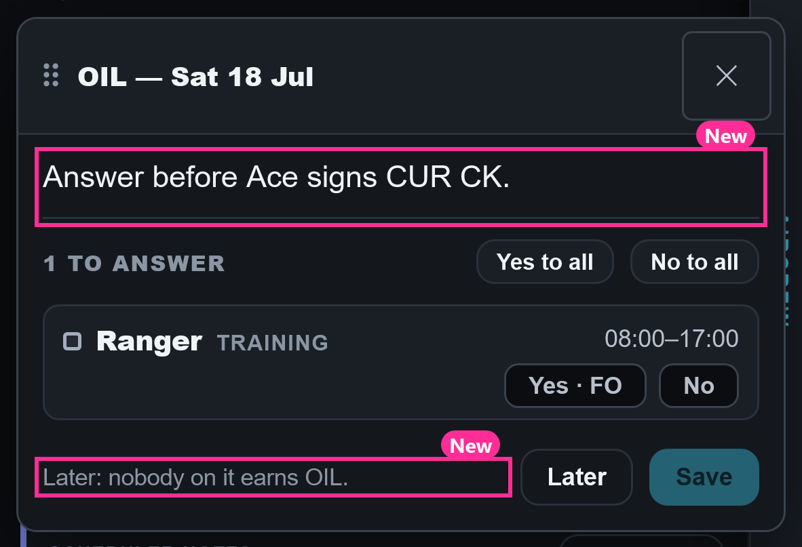
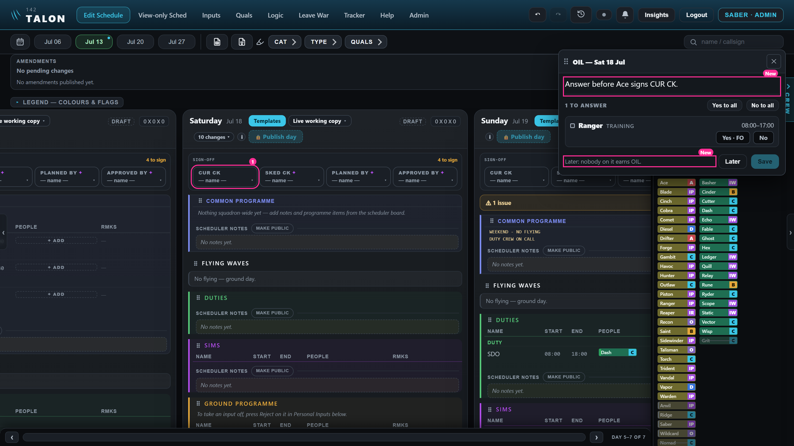
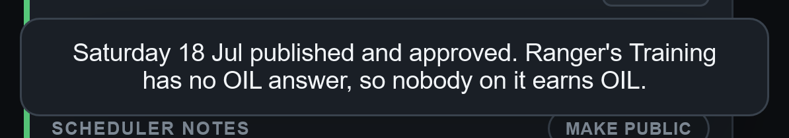

Unanswered OIL asked at the first sign-off
Round 3: the list's two lines cut short. Tap a picture to enlarge.
1. The two lines, shorter. OK? Pictures
Recommended: yes.
2. ✕ on the list: nothing is signed, and the next press asks again.
Recommended: yes. If ✕ worked like Later, closing the list would sign the day by accident.
The press opens the OIL list
Pick a name in any sign-off box. The list opens first, and the name goes in on Save or Later.
Top: Answer before Ace signs CUR CK.
Beside Later: Later: nobody on it earns OIL.




After Save or Later



Pictures are the real app. The two pink-outlined lines are drawn in; pink outlines, "New" and "1" are not part of the design. Earlier rounds are kept in the project.